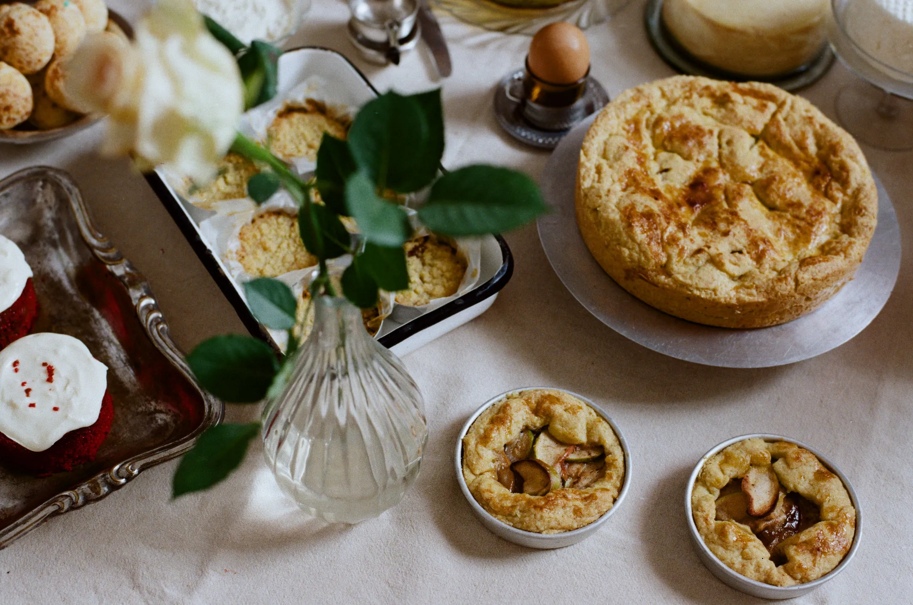
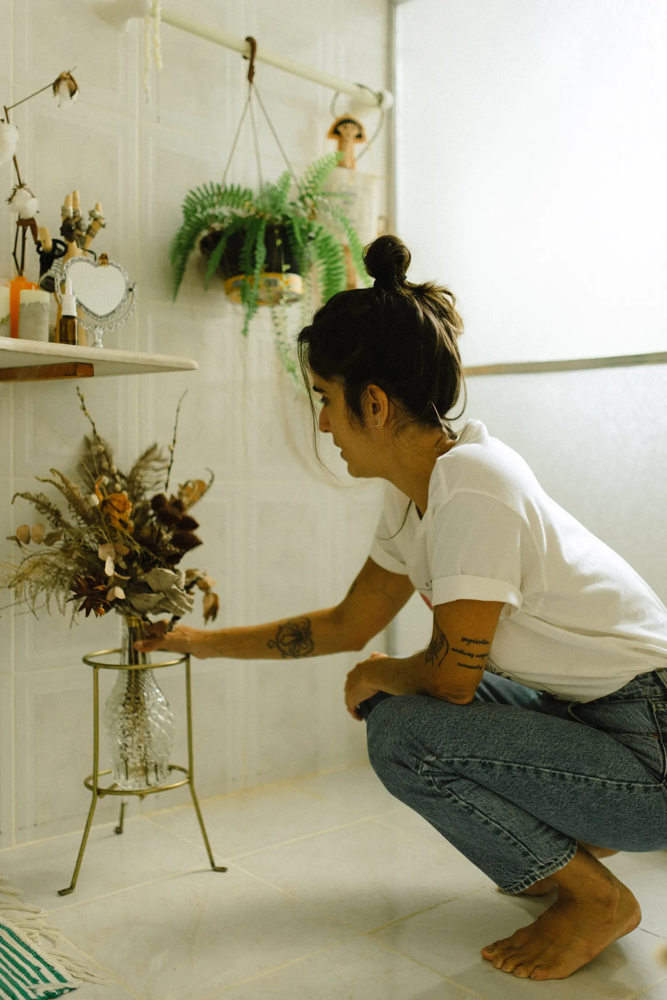

gastronomia
Restaurantes, cafes, cozinhas, menus, serviço e atmosfera.
A Miolo organiza o portfolio em recortes claros para leitura comercial. Hoje, a entrada publica acontece por gastronomia e produto.

Restaurantes, cafes, cozinhas, menus, serviço e atmosfera.

Objeto, superficie, textura, uso e campanha.